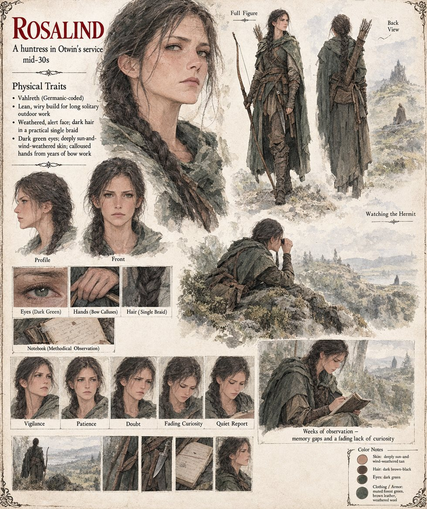

Rosalind
Huntress in Otwin's service · forty-one days in a forest by her own count · mid-thirties by her sheet
A huntress by trade, unremarkable in every particular that matters to Otwin's purpose, whom he sends because soldiers, he has learned at some cost, are an argument the hermit has no difficulty winning. Her instructions are to do nothing more provocative than exist, at a respectful distance, in the same forest as Vara, for as long as it takes to see something worth reporting. She stays forty-one days by her own count, which she has stopped trusting by the third week. She can describe, with a huntress's precision, every game trail, every deadfall and every bend of the water the hermit walks out to each morning for his shrimp. She cannot produce one coherent account of an entire day in his company that does not seem to be missing pieces she has no memory of losing: a conversation she remembers beginning and cannot remember ending, an afternoon she is certain held more than the two hours her careful notes account for.
She goes to Otwin at last not with an observation but a confession. Around the fourth week she began to feel toward the pale hermit exactly the vague, comfortable, faintly embarrassed lack of curiosity a person feels toward a neighbour's fence post, and she needed a full day's ride away from that forest before the feeling thinned out enough for her to notice it had ever been there. It is her report, more than the records, that supplies him with the one fact he lacked: that whatever the hermit is, he has arranged, deliberately or not, to be the kind of thing a mind simply declines to hold onto, so that every account of him is permanently incomplete in ways nobody has a method of measuring. Otwin keeps it beside Emmerich's, and later, still failing to describe the quality of stillness she could not describe, finds it nothing like the man who comes to his door. The Auditor, watching from elsewhere, notes with some unease that a usurper's primitive methods, parchment, memory and a huntress with a notebook, have produced in months a fuller profile of the variable than the Auditor's own nine years.
The manuscript gives her no appearance, only her trade, her notes and her forty-one days. The sheet's mid-thirties, dark hair in a single braid, dark-green eyes, weathered skin, muted forest-green cloak, bow, knife and notebook are its own.